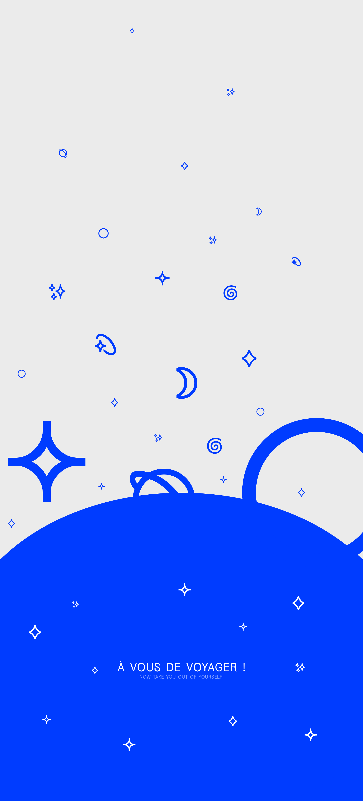
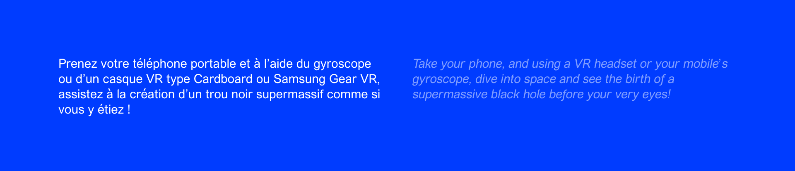
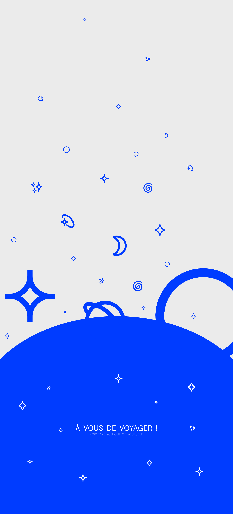
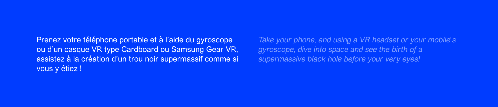

Paris Observatory
Branding, UI, VR
For my diploma project, I did a full rebranding of the Paris Observatory. I redid their logo, print medium, signage system, and website. I also did a VR Video to promote their new website.
The Paris Observatory is the oldest one in the whole world. However, it is left out in favor of larger, more reachable structures.
Furthermore, some people didn’t even know that there was an observatory in the city. However, the Paris Observatory has a huge historic, scientific and educative potential that too little people are aware of. Still to this day, the Paris Observatory remains behind its competitors.
My goal here was to freshen up the Paris Observatory with a brand new visual identity, making us want to discover more about space and its secrets.
 


